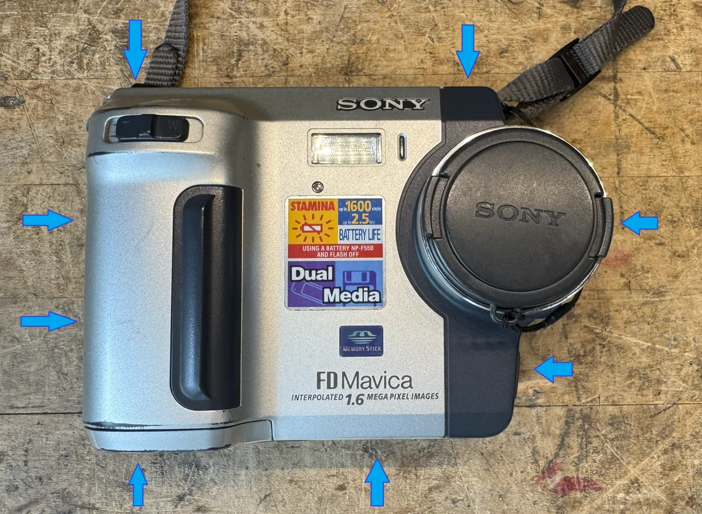
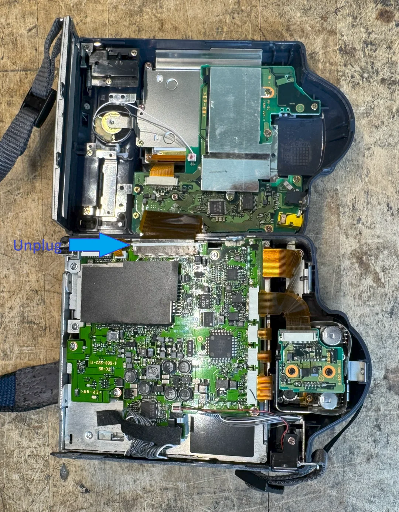
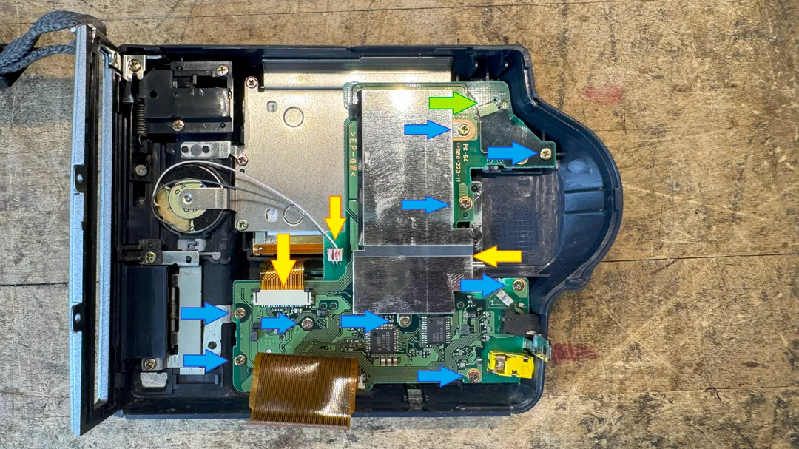
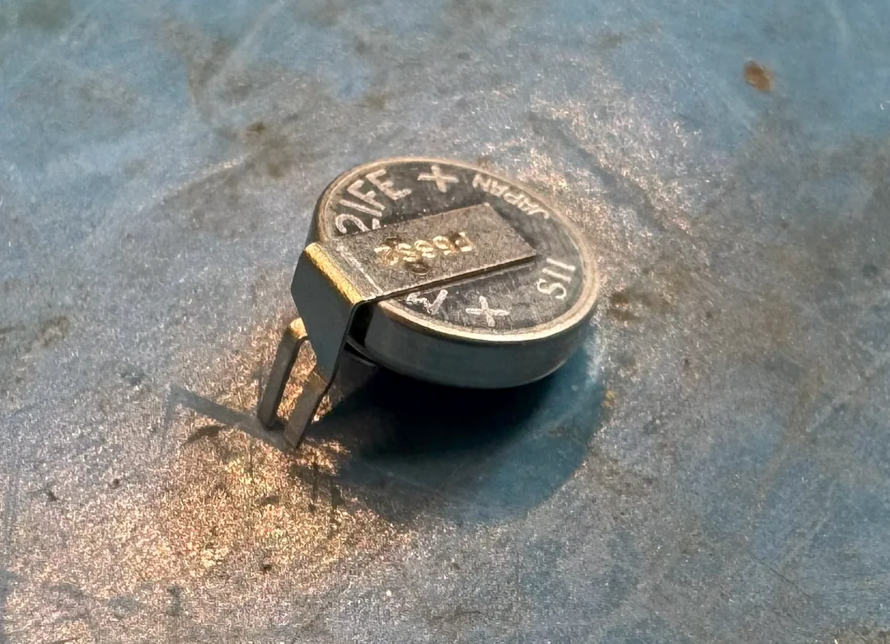
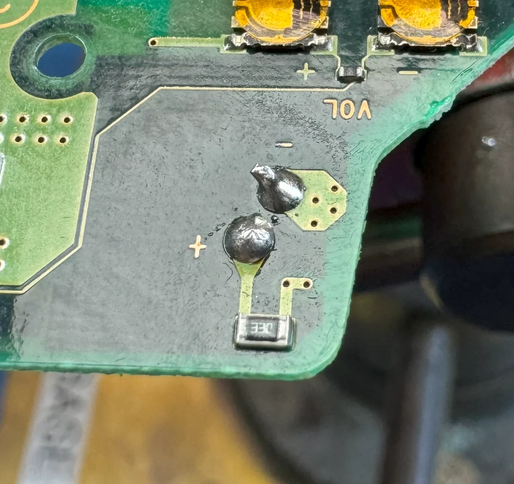
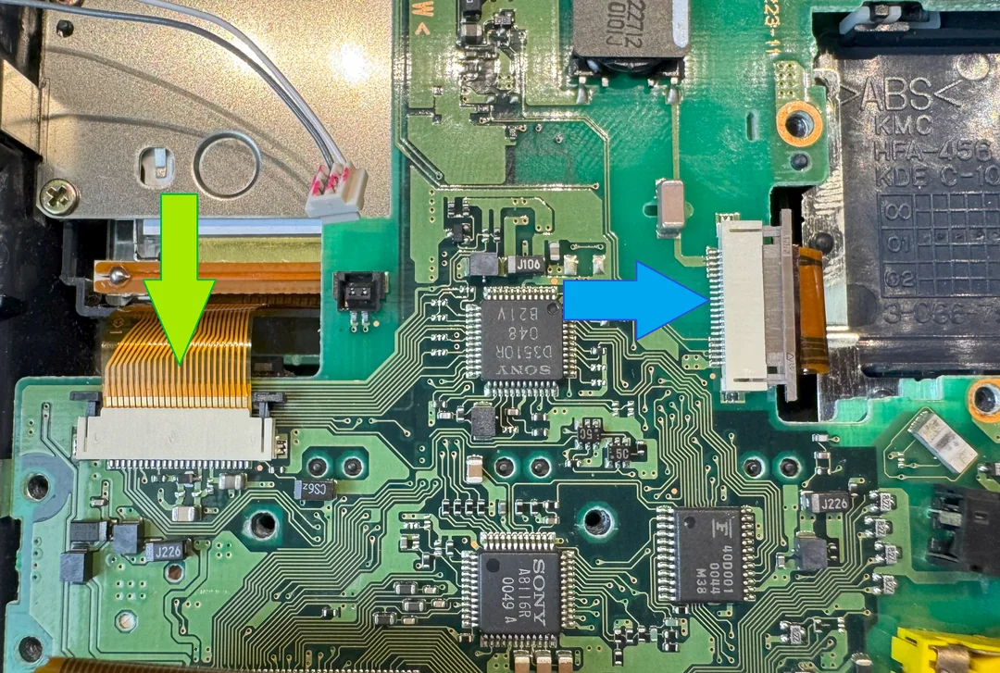
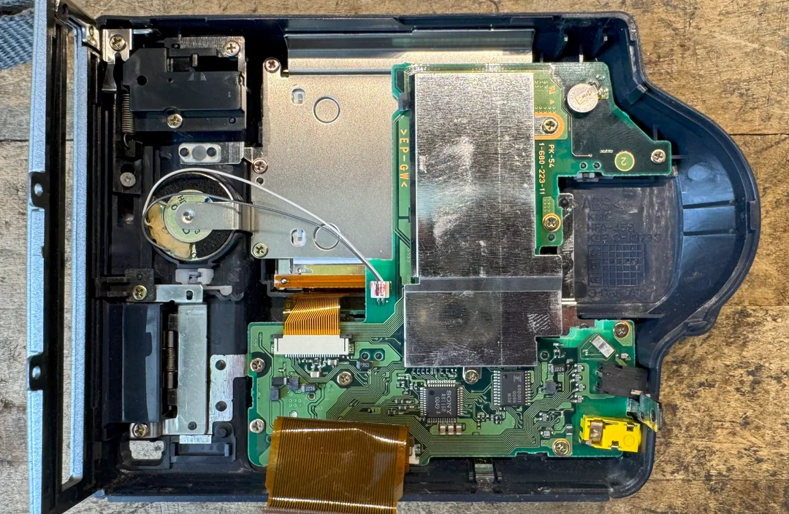

Yes, Your Mavica Should Know the Time! (Replacing the clock battery on late-model FD Mavicas)
All Mavicas allow you to set the time and date. Recent FD models (like the FD-92) may lose time when the main battery is removed—due to a backup coin cell battery. Some models use a disposable CR2025 coin cell, others use a rechargeable MS621FE soldered to the board.
What you'll need
- Replacement battery: MS621FE lithium cell
- Soldering iron, flux, solder
- Desoldering tool (wick or sucker)
- #0 or #00 Philips screwdriver
Quick Steps
- Open the camera (remove main battery first, unscrew outside screws)
- Disconnect ribbon cables and display/control PCB; locate old battery
- Desolder and remove the old battery
- Prep and fit the new MS621FE battery into place
- Solder new battery, clean up, reassemble camera
Step images
      With everything back together you should be good to go! Take your time when reassembling and verify ribbon connectors and speaker connection.